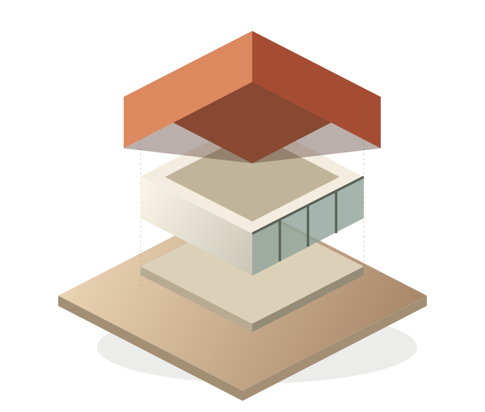
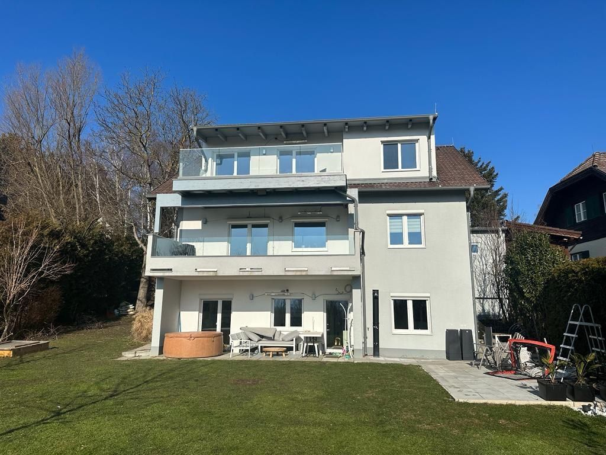
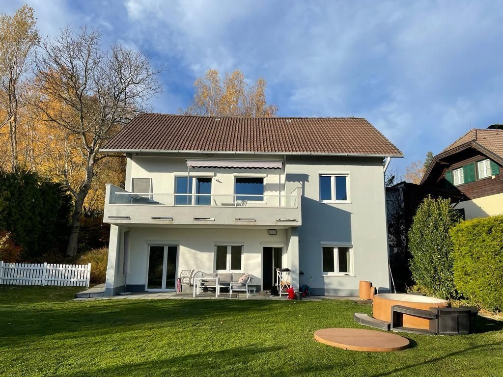
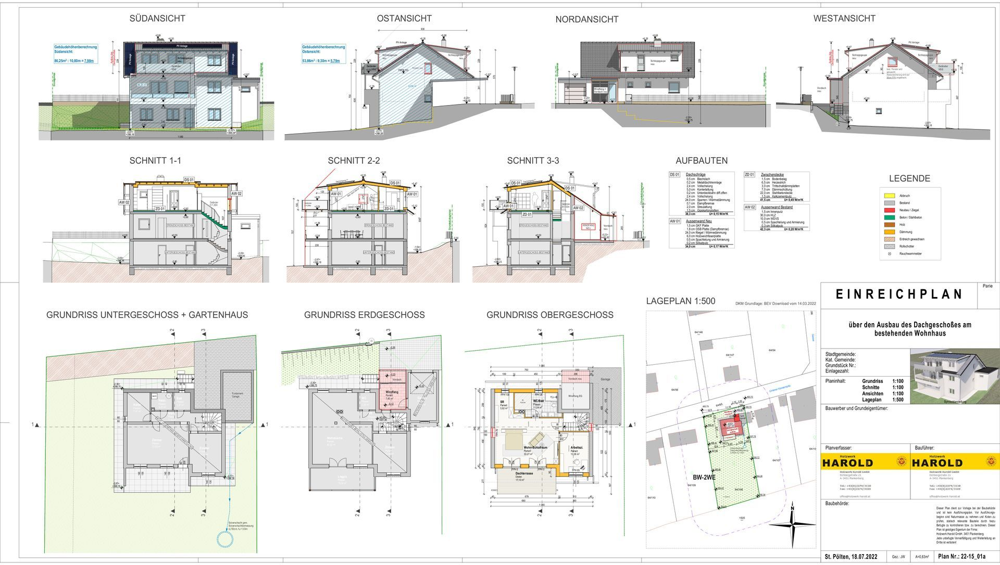
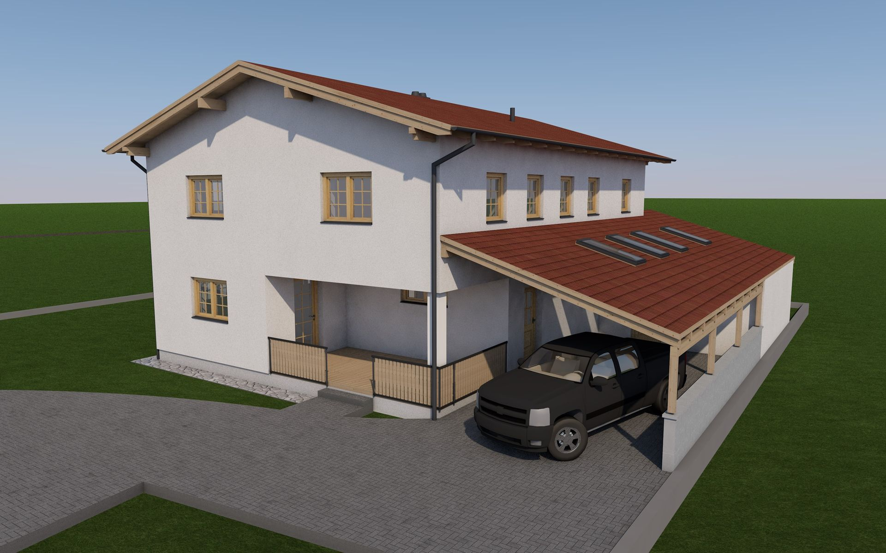
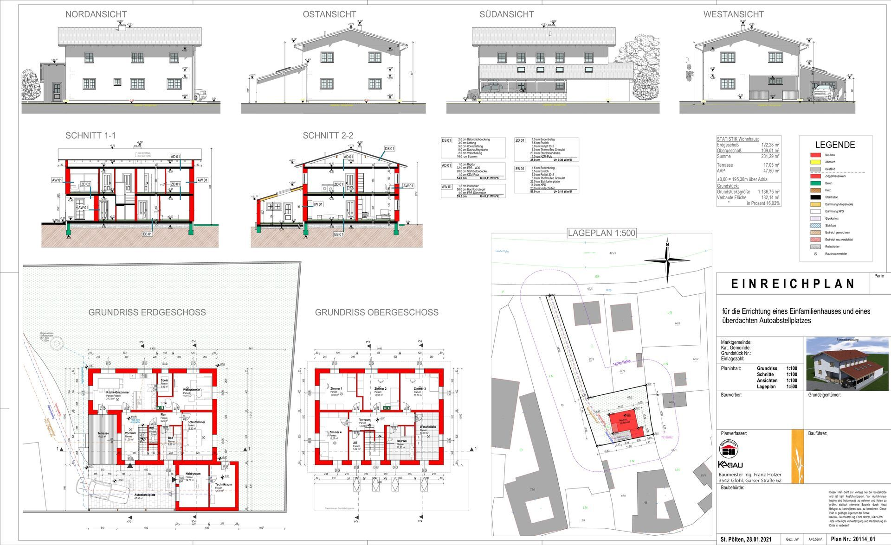

St. Pölten · Niederösterreich 01 / Neubau
Raum zum Weiterdenken. Bauzeichenbüro Weissensteiner in Niederösterreich.

Prinzipmodell · freie IllustrationVom Fundament über die Wände
bis zum fertigen Haus.
Eine Idee braucht Raum.
Zum Fragen.
Zum Verändern.
Zum Wirklichwerden.
01 / Worum geht es bei Ihnen?
Was haben
Sie vor?
Ein- und Mehrfamilienhäuser
Ein Zuhause beginnt
lange vor dem ersten Ziegel.
Wo möchten Sie bauen? Wie wollen Sie wohnen? Welche Rahmenbedingungen bringt das Grundstück mit? Diese Fragen bilden die Grundlage für die nächsten Schritte.
Neubau anfragenDas hilft zum Einstieg
- Gemeinde und Grundstück, soweit bekannt
- Wünsche zu Räumen, Nutzung und Zusammenleben
- Vorhandene Lage- oder Vermessungsunterlagen
- Eine erste Vorstellung von Budget und Zeitrahmen
Zubau · Dachausbau · Aufstockung
Mehr Möglichkeiten
im vertrauten Zuhause.
Ein zusätzlicher Raum, eine weitere Wohnung oder ein ausgebauter Dachboden: Im ersten Schritt geht es darum, den Bestand und Ihre gewünschte Veränderung zusammenzubringen.
Zubau oder Ausbau anfragenDas hilft zum Einstieg
- Bestandspläne und frühere Baubescheide, wenn vorhanden
- Fotos des Hauses und der betroffenen Räume
- Eine Skizze oder kurze Beschreibung Ihrer Idee
- Hinweise zu bisheriger und geplanter Raumnutzung
Umbau · Renovierung · Nutzungsänderung
Das Bestehende
neu betrachten.
Eine Oberfläche erneuern, einen Grundriss verändern oder Räume anders nutzen: Entscheidend ist, was genau verändert werden soll. Fotos und vorhandene Pläne machen die Ausgangslage verständlich.
Umbau oder Renovierung anfragenDas hilft zum Einstieg
- Geplante Änderungen markieren oder beschreiben
- Vorhandene Grundrisse und Bescheide bereithalten
- Betroffene Wände, Fenster, Dach oder Nutzung benennen
- Übersichts- und Detailfotos ergänzen
Carport · Pergola · Gartenhütte
Auch kleine Vorhaben
verdienen einen klaren Anfang.
Größe, Dach, Seitenwände und Standort sind für die Einordnung wichtig. Die Verkaufsbezeichnung allein sagt wenig darüber aus, welches Verfahren erforderlich ist.
Die NÖ-Regeln kennenlernen Mein Vorhaben anfragenDas hilft zum Einstieg
- Länge, Breite und Höhe
- Produktblatt oder Skizze mit Dach und Seitenwänden
- Foto des vorgesehenen Standorts
- Lage zu Haus, Straße und Grundstücksgrenzen
02 / Einblicke in die Zeichenarbeit
Die Möglichkeit
im Bestehenden.
Fotos zeigen den Raum.
Zeichnungen machen die Veränderung nachvollziehbar.


Die Planzeichnung dazu ansehen ↗

Ein Beispiel aus dem bestehenden Auftritt
Ein Dachgeschoss
wird weitergedacht.
Ein zusätzlicher Wohnbereich unter dem Dach: Verschieben Sie die Trennlinie und entdecken Sie die Veränderung am bestehenden Haus.
- Vorhaben
- Ausbau eines Dachgeschosses
- Einblick
- Ansichten, Schnitte und Grundrisse
Aus dem bisherigen Büroauftritt. Projektbeschreibung, genauer Beitrag des Büros und Bildfreigabe werden vor dem regulären Geschäftsauftritt mit Josef abgestimmt.
Über eine ähnliche Idee sprechen

03 / Zusammenarbeit
Ein guter Plan.
Auch für den Weg dorthin.
Am Anfang stehen Ihr Vorhaben und die vorhandenen Grundlagen. Welche Zeichnungen und Unterlagen benötigt werden und wer welchen Teil übernimmt, wird für das jeweilige Projekt vereinbart.
- 01
Kontakt aufnehmen
Eine Telefonnummer oder E-Mail-Adresse genügt. Fotos, Pläne und Ihre Gedanken können Sie gleich ergänzen.
- 02
Grundlagen klären
Was ist vorhanden, was soll entstehen und welche Informationen fehlen noch? Daraus ergibt sich der nächste sinnvolle Schritt.
- 03
Umfang vereinbaren
Zeichnungen, Unterlagen, Zuständigkeiten und Honorar werden für Ihr Vorhaben festgelegt. Fachpartner werden nach Bedarf einbezogen.
- 04
Unterlagen ausarbeiten
Die vereinbarten Zeichnungen und Unterlagen werden ausgearbeitet, abgestimmt und übergeben.
Ablaufvorschlag zur Abstimmung mit Josef. Behördeneinreichung, Statik, Energieausweis und Bauleitung sind gesondert nach Leistungsumfang und Zuständigkeit zu klären.
04 / Bauen in Niederösterreich
Recherchestand 21.10.2026Klein gebaut.
Groß gefragt.
Seit 1. März 2026 ersetzt die Baubewilligung im vereinfachten Verfahren das bisherige Anzeigeverfahren. Zugleich wurden bestimmte Freistellungen erweitert.
Welche Regel für Ihr Vorhaben gilt, hängt von der Konstruktion und dem Grundstück ab. Hier finden Sie erste Orientierung und die Originalquellen.
01CarportDach, Seitenwände, Größe und Standort
Für oberirdische bauliche Anlagen mit gebäudeähnlicher Nutzung bis 50 m² überbauter Fläche und 3 m Höhe ist ein vereinfachtes Bewilligungsverfahren vorgesehen. Das Land nennt ein Carport mit höchstens einer Wand als Beispiel.
Weitere Wände, eine andere Bauweise oder größere Abmessungen erfordern eine eigene Einordnung. Auch im vereinfachten Verfahren brauchen Sie eine Bewilligung.
Quelle: Land NÖ – Kategorien von Bauvorhaben ↗02PergolaRankgerüst oder überdachte Konstruktion?
Freistehende Rankgerüste sind außerhalb von Schutzzonen und Altortgebieten bewilligungs- und meldefrei. Eine im Handel als „Pergola“ angebotene Anlage kann konstruktiv etwas anderes sein.
Ein festes Dach, Lamellen, Seitenwände oder der Anschluss an ein Haus sind deshalb genau zu beschreiben. Ein Produktblatt und ein Foto des Standorts helfen bei der Einordnung.
Quelle: § 17 Z 9 NÖ Bauordnung ↗03Gartenhütte10 m² allein beantworten die Frage noch nicht
Die Freistellung gilt für jeweils eine Gartenhütte und ein Gewächshaus pro Wohnung mit zugeordneter Gartenfläche bei einem Wohngebäude. Dabei müssen alle folgenden Voraussetzungen erfüllt sein:
- jeweils höchstens 10 m² überbaute Fläche und höchstens 3 m Höhe,
- außerhalb von Schutzzonen und des vorderen Bauwichs,
- nicht im Bauland-Sondergebiet.
Für andere Fälle und insbesondere Kleingärten sind die jeweiligen Vorschriften gesondert zu prüfen. Auch ein freies Vorhaben muss die sonstigen maßgeblichen Bestimmungen einhalten.
Quelle: § 17 Z 8 NÖ Bauordnung ↗Die konkrete Einordnung und Zulässigkeit klären Sie mit der zuständigen Baubehörde. Die Lage am Grundstück, Widmung und örtliche Bestimmungen gehören dazu.
Zum aktuellen Leitfaden des Landes05 / Gut ins erste Gespräch
Alles Wichtige.
Ganz ohne Papierstapel.
Sie müssen noch keine vollständige Mappe haben. Sammeln Sie zunächst, was schon da ist. Unsere Vorbereitungsliste hilft, die wichtigsten Punkte zu ordnen.
Vorbereitungsliste herunterladen Textdatei · ohne Registrierung · drei ChecklistenIhre IdeeWas möchten Sie verändern oder neu schaffen?
Der OrtGemeinde, Adresse oder Grundstück – soweit bekannt.
Was schon da istFotos, Pläne und Bescheide, die Ihnen vorliegen.
Ihre VorstellungenWünsche, Zeitrahmen und eine erste Budgetorientierung.
06 / Häufige Fragen
Noch ein paar
Fragezeichen?
Hier finden Sie Antworten für den Einstieg. Ihre konkrete Situation besprechen wir anhand Ihres Vorhabens.
18 Fragen
Kann ich mich schon mit einer groben Idee melden?
Ja. Für die Kontaktaufnahme genügt eine Telefonnummer oder E-Mail-Adresse. Sie können Ihr Vorhaben kurz beschreiben und vorhandene Unterlagen ergänzen. Alles Weitere lässt sich anschließend klären.
Welche Unterlagen helfen beim ersten Gespräch?
Hilfreich sind der Ort des Vorhabens, eine kurze Beschreibung Ihrer Wünsche sowie vorhandene Pläne, Bescheide und Fotos. Auch ein gewünschter Zeitrahmen und eine grobe Budgetvorstellung helfen. Diese Angaben sind beim ersten Kontakt freiwillig.
Was sollte ich vor einem Neubau vorbereiten?
Halten Sie vorhandene Grundstücksinformationen und Lage- oder Vermessungsunterlagen bereit. Notieren Sie, wie Sie wohnen möchten: benötigte Räume, Anzahl der Bewohner, besondere Anforderungen und mögliche spätere Veränderungen.
Was ist bei Ausbau oder Renovierung wichtig?
Beschreiben Sie, was bestehen bleiben und was verändert werden soll. Bestandspläne, frühere Baubescheide und Fotos helfen, die Ausgangslage zu verstehen. Ob tragende Bauteile, die Nutzung oder technische Anlagen betroffen sind, ist für die weitere Prüfung wichtig.
Was mache ich, wenn keine alten Pläne vorhanden sind?
Beginnen Sie mit den Unterlagen und Fotos, die Sie haben. Im nächsten Schritt lässt sich klären, welche Pläne bei Eigentümern oder zuständigen Stellen verfügbar sind und ob eine Bestandsaufnahme oder Vermessung erforderlich wird.
Wo finde ich erste Informationen zu meinem Grundstück?
Der NÖ Atlas stellt unter anderem Karten, Luftbilder und Flächenwidmungsinformationen bereit. Er hilft bei der Orientierung. Für verbindliche Auskünfte sind die maßgeblichen Unterlagen und zuständigen Stellen heranzuziehen.
Zum NÖ Atlas beim Land Niederösterreich ↗Was übernimmt das Bauzeichenbüro, was übernehmen Partner?
Im Mittelpunkt stehen die vereinbarten Zeichenleistungen und Unterlagen. Je nach Vorhaben werden befugte Fachleute benötigt. Wer welche Leistung übernimmt und wer als Planverfasser verantwortlich ist, wird für das konkrete Projekt festgelegt.
Für die Endfassung: Josefs eigene Leistungen und die Rollen der Partner einzeln bestätigen.
Wie läuft die Zusammenarbeit ab?
Der vorgesehene Ablauf führt von der Kontaktaufnahme über die Klärung der Grundlagen und des Leistungsumfangs zur Ausarbeitung der vereinbarten Zeichnungen und Unterlagen. Zuständigkeiten, Abstimmungen und Übergabe werden dazu passend festgelegt.
Die vier Schritte ansehen ↓Was kostet die Unterstützung?
Der Aufwand hängt unter anderem vom Umfang der Aufgabe, den vorhandenen Grundlagen, gewünschten Varianten und erforderlichen Unterlagen ab. Ein Angebot sollte klar benennen, welche Leistungen enthalten sind und welche zusätzlichen Leistungen gegebenenfalls benötigt werden.
Honorar und mögliche Kosten einer ersten Beratung werden für die Endfassung mit Josef geklärt.
Wie lange dauert ein Vorhaben?
Die Zeit für die Ausarbeitung, das Beschaffen fehlender Unterlagen und ein mögliches Behördenverfahren sind getrennt zu betrachten. Ein realistischer Zeitrahmen lässt sich nach Klärung der Aufgabe und der verfügbaren Grundlagen besprechen.
Kann ich Herstellerunterlagen oder eigene Skizzen schicken?
Ja. Fotos, Skizzen und Produktunterlagen helfen dabei, Ihre Vorstellung zu verstehen. Ob diese Unterlagen für das konkrete Verfahren ausreichen oder ergänzt werden müssen, wird anschließend geprüft.
Was passiert nach meiner Anfrage?
Vorgesehen ist, die Anfrage zu sichten und mit Ihnen den nächsten Schritt zu klären. Der Umfang einer möglichen Beauftragung wird anschließend gesondert vereinbart.
In diesem lokalen Entwurf wird die Anfrage ausschließlich im Browser geprüft und nicht verschickt.
Was hat sich beim Anzeigeverfahren 2026 geändert?
Seit 1. März 2026 gibt es anstelle des bisherigen Anzeigeverfahrens eine Baubewilligung im vereinfachten Verfahren. Zusätzlich wurden einzelne Freistellungen erweitert. Für bereits anhängige Verfahren sind die Übergangsbestimmungen zu beachten.
Zum Leitfaden des Landes ↗Ist jede Pergola ein bewilligungsfreies Rankgerüst?
Die Bezeichnung allein genügt für diese Einordnung nicht. Entscheidend sind Konstruktion, Überdachung, Seitenwände, Befestigung und Standort. Freistehende Rankgerüste außerhalb von Schutzzonen und Altortgebieten sind in § 17 NÖ Bauordnung als frei genannt.
Die Unterschiede ansehen ↑Ist eine Gartenhütte bis 10 m² automatisch frei?
Es müssen zusätzlich die Höhenbegrenzung, der Bezug zu einer Wohnung mit zugeordneter Gartenfläche bei einem Wohngebäude und die Vorgaben zu Lage und Widmung erfüllt sein. Die Freistellung gilt für eine Gartenhütte und ein Gewächshaus je solcher Wohnung.
Alle Voraussetzungen ansehen ↑Was gilt an der Grundstücksgrenze?
Die Lage zu Grundstücksgrenzen muss zusammen mit dem Vorhaben, der Widmung und den örtlichen Bestimmungen betrachtet werden. Eine für alle Carports, Hütten, Zubauten oder Überdachungen gültige pauschale Abstandsangabe wäre dafür nicht ausreichend.
Kann ich nach der Anfrage schon mit dem Bauen beginnen?
Die Kontaktaufnahme mit dem Büro ist keine Einreichung bei der Baubehörde und keine Baufreigabe. Klären Sie vor Beginn, welches Verfahren und welche weiteren Schritte für das konkrete Vorhaben erforderlich sind.
Welche Unterlagen braucht die Baubehörde?
Das hängt vom Vorhaben und vom Verfahren ab. Das Land Niederösterreich stellt eine Musterbaubeschreibung und eine Checkliste bereit. Welche Unterlagen in Ihrem Fall erforderlich sind, ist anhand des konkreten Vorhabens zu klären.
Zu Muster und Checkliste des Landes ↗Zu diesem Begriff wurde keine Frage gefunden. Versuchen Sie einen anderen Begriff oder nehmen Sie Kontakt auf.
07 / Ihr Ansprechpartner in St. Pölten
Hier zuhause.
Für Ihr Vorhaben.
Ing. Josef Weissensteiner
Das Bauzeichenbüro in St. Pölten ist Anlaufstelle für die vereinbarten Zeichnungen und Unterlagen rund um Ihr Bauvorhaben. Für die erforderlichen Fachleistungen werden die Zuständigkeiten mit den beteiligten Partnern abgestimmt.
Altmanngasse 40
3100 St. Pölten, Niederösterreich
08 / Der erste Schritt
Jeder Plan
beginnt mit
Hallo.
Eine Telefonnummer oder E-Mail-Adresse genügt. Wenn Sie schon Fotos oder Unterlagen haben, können Sie diese gleich ergänzen.
Entwurf zur Durchsicht: Das Formular wird lokal getestet. Es werden keine Angaben oder Dateien verschickt oder dauerhaft gespeichert.